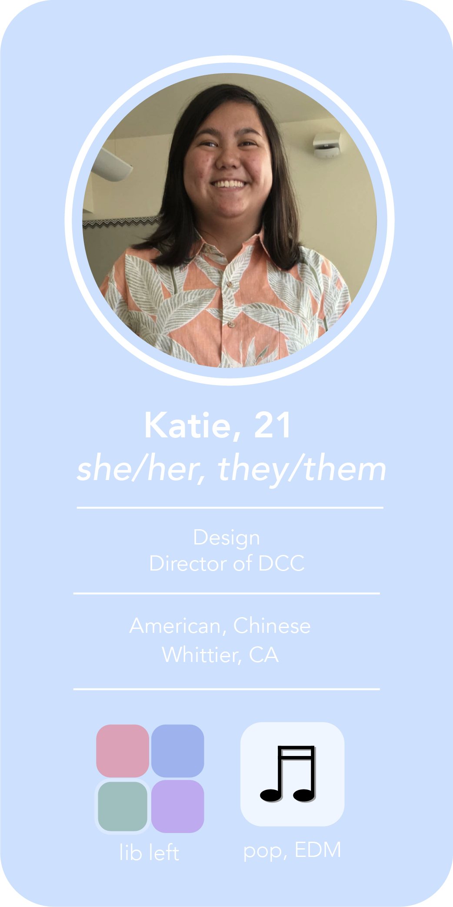
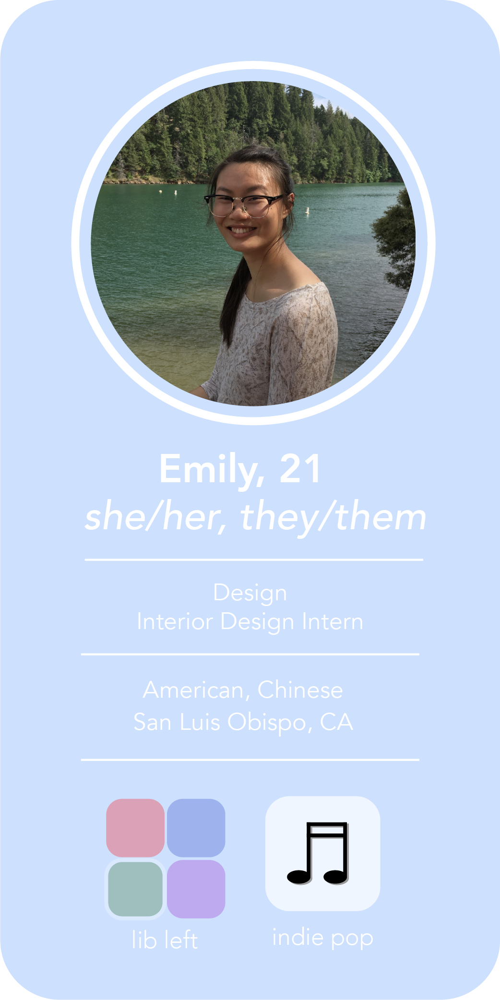
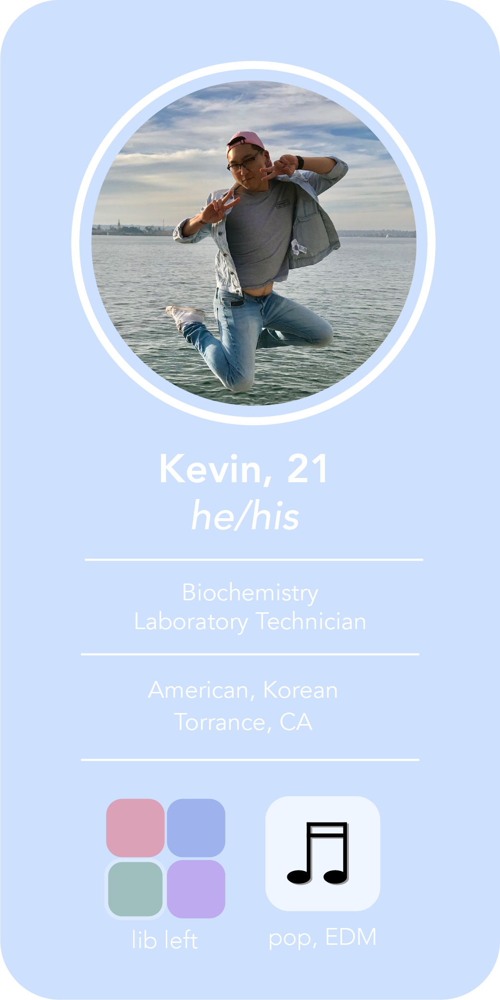
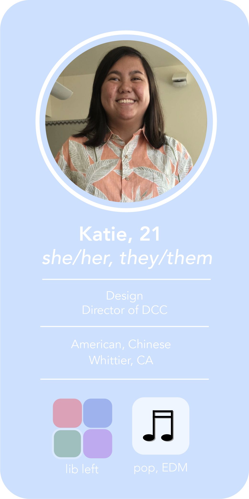
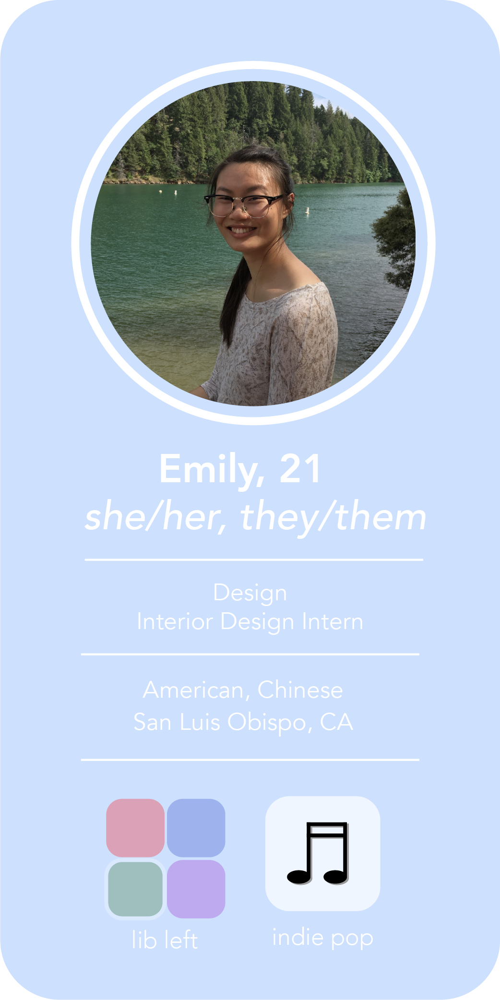
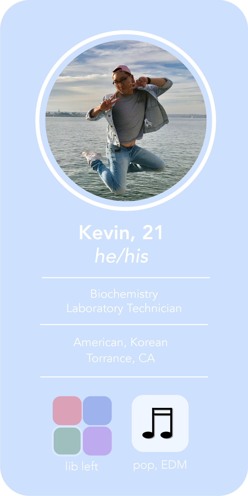

I've always felt as if the people I'm close to carry similar traits to me, in a show of homophily, and this has been proven time and time again.
All of the people included in myb audience profiles are close friends of mine, as we all have similar political alignments and upbringings. That being said, three out of four of these audience members agree with my views on fast fashion, and granted, it's not easy to tell which one disagrees.
I included my friends who both disagree and agree with my views simply contingent upon the fact that people's opinions can change, and simply due to casting profiles, it's very simple to make claims that will benefit the cause at a whole. For instance, Kevin's interest is in sustainability, but he finds fast fashion beneficial due to its accessibility. While that is a valid claim, I could cater to his ideas of sustainability, and then counter it with how buying ethically manufactured clothing will more likely than not result in the clothes lasting longer, subsequently reducing the waste that is created by fast fashion and 52 seasons of trends.
My argument greatly benefits from the inclusion of an opposing argument, because it informs that I have the potential to sway their beliefs instead of settling to agree to disagree.